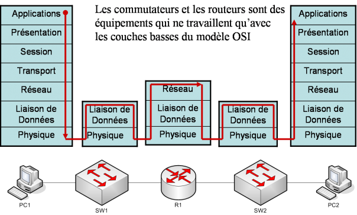
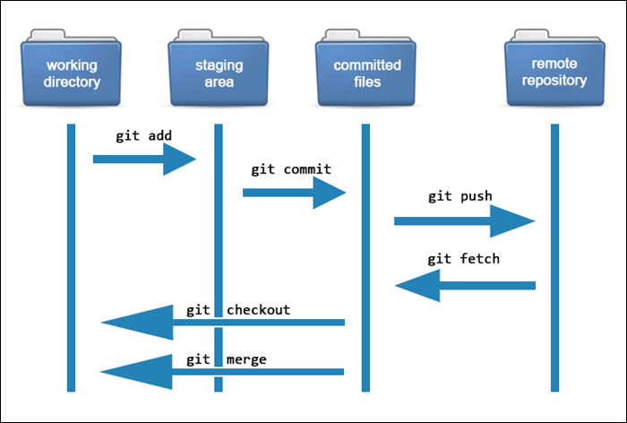

Chapitre 1 :Introduction
Le premier chapitre est essentiel dans la compréhension du module. Il vise a introduire l'étudiant au module et le familiariser avec les notions qu'il rencontrera dans les chapitres suivants.
Ainsi l'étudiant prend connaissance des outils et techniques de l'information et de la communication. D'abord il est important de mentionner le but du module: identifier et manipuler des concepts et outils qui permettent à un utilisateur de communiquer, transmettre, accéder, stocker et produire l'information sur une interface virtuelle.
Au terme du semestre, l'étudiant doit être capable d’identifier une structure réseau et ses paramètres. Pour cela l'étudiant doit être introduit aux composants des TICs (matériels et logiciels) ainsi que leurs caractéristiques (rapidité, accès mondial, anonymat, etc...). Puis, au fonctionnement et au rôle(s) de ces composants dans un système de communication (émetteur, récepteur, vecteur, fonction).
Enfin, c'est aux types de communication que l'étudiant doit se familiariser, qu'elle soit commerciale, institutionnelle, interpersonnelle, de groupe ou de masse, il est important de comprendre son enjeu dans l'univers médiatique et quelles sont les technologies qui encodent son information.
Pour conclure, le module de TIC est nécessaire à tout étudiant qui vise à comprendre la manière dont l’information est traitée et échangée virtuellement.
Chapitre 2 :Les Réseau Informatiques
1-Les réseaux informatiques :
Le réseau est nés du besoin d'échanger des informations de manière simple et rapide entre des machines .C'est un ensemble d'équipements reliés entre eux afin de partager des données, des ressources et d'échanger des informations.
2-Les caractéristiques de base d'un réseau :
- La topologie : c'est l’architecture d’un réseau . Il existe deux différents types : physique et logique.
- Le débit : détermine la vitesse de transmission des informations sur un réseau informatique.
- La distance maximale.
- Le nombre de nœuds maximum : Un nœud est un périphérique physique au milieu de nombreux périphériques sachant recevoir, envoyer et transférer des informations.
3-Les éléments d'un réseau :
- un ordinateur .
- les logiciels .
- les supports du ( LAN , WAN ) .
- les équipements d'interconnexion :
- LAN :répéteur , concentrateur ,commutateur
- WAN : routeur.
4-La classification des réseaux
On peut classifié les réseaux selon plusieurs critères :
1.l'envergure :
- Les LAN (Local Area Network) : à l’intérieur d’un immeuble, ou d’une superficie inférieure à 10 Kilomètres.
- Les MAN (Metropolitan Area Network) : circoncis à une ville, comme par exemple, le réseau du métro.
- Les WAN (Wide Area Network) : ont au moins la dimension d’un pays, et ils englobent souvent la planète entière.
Il existe d’autres comme :
- Les RLE:(Réseau Local d’Entreprise).
- SAN(Storage Area Network).
2.L'ouverture :
- intranet :à l’intérieur d’une entreprise.
- extranet :ouvert vers l’extérieur.
- internet les réseaux publics :nationaux ou internationaux des entreprises de télécommunication : internet.
3.Les supports de connexion :
- Réseaux filaires ,Réseaux Sans Fils :comme la fibre optique et le wifi
4.Le type d'organisation :
- Le réseau poste à poste (peer to peer) , les réseaux client/serveur .
.png)
5-Le type de topologie :
- Le réseau en bus :Chaque nœud est relié à un seul autre nœud. La transmission des données sur les connexions réseau se fait dans un seul sens.
- Le réseau en étoile :Un nœud de serveur central est relié à plusieurs appareils du réseau client. Cette topologie est plus performante, car les données n'ont pas à passer par chaque nœud. Elle est aussi plus fiable.
- Les réseaux en anneaux : Chaque nœud est relié à deux autres nœuds, formant ainsi un anneau. Les données peuvent circuler de manière bidirectionnelle. Toutefois, l'échec d'un seul nœud peut entraîner l'effondrement de l'ensemble du réseau.
- Mailée :Chaque nœud est connecté à de nombreux autres nœuds. Dans une topologie de maillage complet, chaque nœud est connecté à tous les autres nœuds du réseau.
Chapitre 3 :LE MODELE OSI
1-Les Composants matériel d’un Réseau informatique :
Les cartes réseaux :
aussi appeles cartes dinterface réseau NIC, sont des composants matriels qui permettent un ordinateur de se connecter a un réseau, comme Internet ou un réseau local. Les cartes réseau sont installes lintrieur de lordinateur et sont généralement connectés une prise Ethernet ou Wi-Fi.
Un switch :
réseau connecte des appareils sur un LAN en utilisant des adresses MAC pour permettre la communication. Il stocke les adresses MAC dans une table de correspondance pour envoyer les données uniquement à l'appareil destinataire.
Un hub :
ou concentrateur connecte des appareils sur un LAN en transmettant toutes les données reçues à tous les autres appareils connectés, contrairement à un switch qui envoie les données uniquement à l'appareil destinataire.
2-Le Modèle OSI :
Le modèle OSI (Open Systems Interconnection) est souvent utilisé comme référence pour la conception et la mise en œuvre de réseaux informatiques. Les sept couches du modèle OSI sont les suivantes :
La couche physique responsable de la transmission des données sur le support physique
La couche liaison de donnes responsable de la transmission des donnes entre les appareils qui partagent un même support physique.
La couche réseau responsable du routage des donnes travers le réseau.
La couche transport responsable de lacheminement des donnes de bout en bout entre les appareils.
La couche session responsable de ltablissement et de la gestion des sessions entre les appareils.
La couche présentation responsable de la conversion des données dans un format qui peut être compris par l'appareil de destination.
La couche application responsable de la communication entre les applications sur les appareils de réseau
3-Le modèle TCP/IP
Le modèle TCP/IP (Transmission Control ProtocolInternet Protocol) est un modèle de référence pour les communications de réseau, qui est utilisé pour la conception et la mise en œuvre des réseaux informatiques modernes. le modèle TCP/IP divise les communications en quatre couches principales : La couche liaison de données, La couche réseau, La couche transport , La couche application .
4-L’adressage :
Les communications dans un réseau sont régies par des règles, notamment l'adressage IP, l'architecture et les protocoles. L'adressage IP est un numéro unique qui identifie chaque ordinateur dans un réseau. Il existe deux modes d'adressage IP :
IPv4 dont Chaque paquet contient une adresse source sur (32 bits) et une adresse destinataire sur (32bits) Donc IPV 4==4octets==32 bits, et IPv6 avec des adresses de 128 bits, La représentation se fait en découpant le mot de 128 bits de l'adresse en 8 mots de 16 bits séparés par le caractère «:», chacun d'eux est en hexadécimal.
5-L’adresse IPV4 :
L'adressage IPv4 et de la manière dont les adresses IPv4 sont composées. Chaque adresse IPv4 est divisée en deux parties : une partie pour le réseau et l'autre pour les hôtes. La partie réseau est déterminée par les bits de valeur supérieure et la partie hôte par les bits restants. On reconnaît qu'un réseau est un hôte lorsque la valeur des bits pour la partie réseau est la même. Le nombre de bits de la partie hôte détermine le nombre de machines possibles sur ce réseau.
L’adressage IPV4 s’effectué selon les types suivants :
L’adresse réseau : tous les bits de la partie hôtes=0
L'adresse de diffusion : il s’agit d’une adresse dans laquelle tous les bits de partie hôtes=1 ainsi que c’est une adresse permette à un pc d’envoyer des paquets à l’adresse de diffusion de réseau, et tous les hôtes de cette adresse reçoivent ces données, sans qu’il distribue un paquet pour chaque pc d’une manière unique.
L’adresse des hôtes : est utilisée pour attribuer des adresses aux machines situées sur ce réseau.
Masque de réseau et de sous-réseau : Tous les bits de la partie réseaux = 1
Chapitre 4 :Introduction au Web et à Internet
1-Le Web et Internet :
Le Web (World Wide Web): est un système hypertexte public accessible sur Internet, qui permet de consulter des pages accessibles sur des sites. Le Web a été inventé par Tim Berners-Lee et Robert Cailliau plusieurs années après Internet. Internet: est le support de communication général, tandis que le Web n'est qu'une des applications d'Internet.
2-Aspects techniques du Web:
l'URL:est le nom unique de la page,qui décrit l'emplacement d'une ressource. le protocole HTTP:est un protocole de niveau applicatif qui permet une communication client-serveur. Le langage de description HTML: il permet de créer des pages Web et de les interpréter dans un navigateur.
3-Page Web et Site Web
Une page Web: est un document multimédia décrit élément par élément à l'aide du langage de description HTML. Un site Web: est un regroupement de pages Web autour d'une thématique commune, reliées entre elles par des liens hypertextes et émanant d'une même entité.

4-Création d'une page Web HTML
HTML: est le langage de description de pages Web. Un document HTML: est un fichier texte structuré par des balises et interprété dans un navigateur. Les balises de base d'un document HTML: html. head. title. body. permettent de délimiter le début et la fin du document, l'entête, le titre et le corps du document. Les titres et paragraphes sont créés à l'aide des balises h et p.
Chapitre 5 :Git

1-Introduction :
Git est un logiciel de versioning, également appelé logiciel de gestion de version, il permet aux développeurs de travailler sur différentes parties du projet en même temps, suivre les modifications apportées à chaque fichier, collaborer en partageant leur code et fusionner les modifications apportées par différents contributeurs. Un système de gestion de version permet également de restaurer une version précédente du code en cas de problème, de tester différentes versions du code pour trouver la meilleure solution et de garder une trace de l'historique du projet et des contributeurs.
Parmi les logiciels de gestion de versions, Git est devenu le leader incontesté. Il est donc indispensable pour tout développeur de savoir utiliser Git. Git est un exemple de système de gestion de version décentralisé, tandis que des systèmes tels que SVN sont des exemples de systèmes de gestion de version centralisés. Il existe deux modèles principaux de logiciels de gestion de version : le modèle centralisé et le modèle décentralisé :
Dans le modèle centralisé, il y a un serveur central qui stocke toutes les versions du code source. Les développeurs travaillent sur des copies locales de ce code et soumettent leurs modifications au serveur central pour les intégrer à la version principale. Les avantages de ce modèle sont la simplicité et le contrôle centralisé. Cependant, les inconvénients sont la dépendance vis-à-vis du serveur central, le risque de conflits lors de la fusion des modifications et la difficulté de travailler hors ligne.
Dans le modèle décentralisé, chaque développeur a sa propre copie du code source et peut travailler sur ses modifications localement, sans avoir besoin d'une connexion au serveur central. Les développeurs peuvent ensuite fusionner leurs modifications en utilisant un système de fusion distribué. Les avantages de ce modèle sont la flexibilité, l'indépendance et la facilité de travail hors ligne. Cependant, les inconvénients sont la complexité, la nécessité de gérer les conflits localement et le risque de perdre des modifications si elles ne sont pas sauvegardées correctement.
Dans Git, ce qui permet cette flexibilité est le mécanisme des branches. Une branche est une référence à un commit spécifique dans l'historique des commits.
Git permet de créer et de gérer plusieurs branches dans un dépôt, ce qui permet à plusieurs développeurs de travailler sur différentes fonctionnalités en même temps sans interférer avec le travail des autres. Les branches sont également utiles pour tester des modifications sans affecter le code principal ou pour expérimenter de nouvelles fonctionnalités avant de les fusionner dans la branche principale.
2-Utiliser Git : Interface et gestion :
Il existe deux façons principales d'utiliser Git : en ligne de commande (ou terminal) et à travers une interface graphique (ou GUI).
L'utilisation de la ligne de commande est la méthode la plus courante et la plus puissante pour utiliser Git. Elle nécessite une certaine connaissance de la syntaxe de commandes de Git, mais elle offre un contrôle complet sur les fonctionnalités de Git et permet d'automatiser certaines tâches à l'aide de scripts.
L'utilisation d'une interface graphique est une alternative plus conviviale pour les utilisateurs moins expérimentés. Les GUIs de Git offrent une interface utilisateur graphique qui permet de visualiser facilement les changements, les branches et les commits. Elles peuvent être utiles pour les utilisateurs qui ne sont pas à l'aise avec la ligne de commande ou qui préfèrent une interface plus visuelle.
Il est important de noter que l'utilisation de la ligne de commande ou d'une interface graphique peuvent être utilisées ensemble pour tirer parti des avantages de chacune des méthodes.
Git gère les informations d'un projet sous forme de snapshots, qui sont des copies de l'état du projet à un moment donné.
Chaque snapshot contient une copie complète de tous les fichiers du projet, ainsi que des informations sur les changements qui ont été effectués depuis la création du snapshot précédent. Ces informations sont stockées dans un objet Git appelé commit, qui contient également des informations sur le message de commit, l'auteur du commit et la date à laquelle le commit a été créé.
Git utilise également des objets pour stocker les fichiers eux-mêmes, ainsi que pour stocker les informations sur les branches, les tags et les références de commit.
Git utilise trois zones de travail pour suivre les modifications sur les fichiers d'un projet :
- L'espace de travail(ou working directory): c'est la zone où vous travaillez sur les fichiers de votre projet. Elle contient les fichiers modifiés et les nouveaux fichiers non suivis.
- c'est la zone où vous préparez les fichiers pour la prochaine validation. Elle contient les fichiers modifiés ou nouveaux qui ont été indexés.
- La base de données(ou repository): c'est la zone où Git stocke les instantanés du projet, y compris les versions validées de tous les fichiers. Elle contient l'historique complet des modifications du projet.
Aussi, Git suit les modifications sur les fichiers en les classant en deux grands états : suivi et non suivi.
Les fichiers suivis sont ceux qui appartiennent au dernier instantané capturé par Git, alors que les fichiers non suivis ne font pas partie de l'instantané et n'ont pas été indexés. Lors du démarrage d'un dépôt Git, les fichiers sont non suivis et doivent être indexés et validés. Un fichier suivi peut être dans l'un des trois états : modifié, indexé ou validé. Les fichiers modifiés sont considérés comme tels tant qu'ils n'ont pas été indexés.
Pour indexer un fichier, on indique à Git que le fichier modifié ou le nouveau fichier doit faire partie du prochain instantané dans sa version actuelle. Lorsqu'on demande à Git de prendre un instantané, les fichiers faisant partie de l'instantané sont considérés comme validés, et le cycle recommence.
3-Démarrer, parametrer et modifier un dépôt Git:
Pour démarrer un dépôt Git, il faut suivre les étapes suivantes :
- Ouvrir un terminal ou une interface de ligne de commande dans le dossier où le projet est stocké.
- Initialiser un dépôt Git en tapant la commande "git init". Cela va créer un sous-dossier .git qui contiendra l'historique des versions du projet.
- Ajouter les fichiers du projet au dépôt Git en utilisant la commande "git add". Il est possible d'ajouter tous les fichiers en une seule fois en tapant "git add .".
- Créer un commit en tapant la commande "git commit -m 'Message de commit'". Cette commande va créer un point de sauvegarde de l'état actuel du projet avec le message spécifié pour décrire les modifications apportées.
- Il est possible de créer des branches pour travailler sur des fonctionnalités isolées à l'aide de la commande "git branch nom_de_la_branche". Pour basculer sur une branche, il faut utiliser la commande "git checkout nom_de_la_branche".
Le paramétrage de Git est important pour configurer le comportement de Git sur votre système. Vous pouvez configurer votre nom d'utilisateur, votre adresse e-mail, votre éditeur de texte par défaut, etc.
Voici quelques exemples de commandes pour configurer Git :
- git config --global user.name "Votre Nom" : permet de configurer votre nom d'utilisateur Git
- git config --global user.email "votre@adresse.email" : permet de configurer votre adresse e-mail
- git config --global core.editor "nom_de_votre_editeur" : permet de configurer votre éditeur de texte par défaut
- git config --list : permet de voir la liste de toutes les configurations actuelles
Pour ajouter ou modifier des fichiers dans un projet et actualiser notre dépôt Git, il faut suivre ces étapes :
- .Ajouter des fichiers au répertoire de travail local : Copier ou créer de nouveaux fichiers dans le répertoire de travail local de votre projet.
- Vérifier l'état des fichiers : Utiliser la commande "git status" pour voir quels fichiers ont été ajoutés, modifiés ou supprimés depuis le dernier commit.
- Ajouter des fichiers pour le prochain commit : Utiliser la commande "git add
" pour ajouter des fichiers spécifiques ou "git add ". pour ajouter tous les fichiers modifiés ou nouveaux. - Vérifier les fichiers ajoutés : Utiliser la commande "git status" pour voir les fichiers ajoutés pour le prochain commit.
- Créer un commit : Utiliser la commande "git commit" -m "message de commit" pour créer un commit avec les fichiers ajoutés.
- Actualiser le dépôt distant : Utiliser la commande "git push" pour envoyer les commits locaux au dépôt distant et mettre à jour l'historique du dépôt distant.
Il est important de noter que les fichiers doivent être ajoutés et validés à chaque fois qu'ils sont modifiés ou ajoutés pour être inclus dans l'historique du dépôt Git.
La manière la plus simple de consulter l’historique des modifications Git est d’utiliser la commande "git log."Cette commande affiche la liste des commits réalisés du plus récent au plus ancien. Par défaut, chaque commit est affiché avec sa somme de contrôle SHA-1, le nom et l’e-mail de l’auteur, la date et le message du commit.
Pour annuler les modifications apportées à un fichier depuis le dernier commit, on peut utiliser la commande "git checkout -- nom-du-fichier". Cela permet de restaurer la version précédente du fichier telle qu'elle était lors du dernier commit.
Il est également possible d'utiliser la commande "git restore" pour restaurer des fichiers à leur état précédent. Cette commande peut être utilisée de différentes manières, selon le type de modification que l'on souhaite annuler. Par exemple, pour annuler les modifications apportées à un fichier depuis le dernier commit, on peut utiliser la commande "git restore nom-du-fichier".